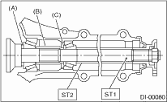
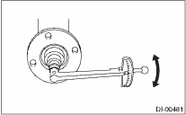
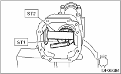
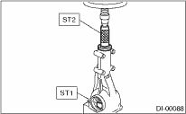
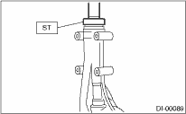
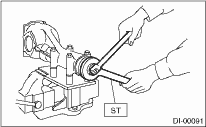
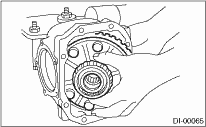
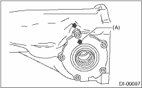
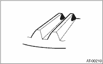

NOTE:
• Assemble in the reverse order of disassembly.
• Check and adjust each part during assembly.
• Keep the shims and washers in order, so that they are not improperly installed.
• Thoroughly clean the surfaces on which the shims, washers and bearings are to be installed.
• Apply gear oil when installing the bearings and thrust washers.
• Be careful not to mix up the RH and LH bearing races.
• Use a new O-ring and gasket.
• Replace the oil seal with a new part at every disassembly.
• Apply grease to the oil seal lip.
• Be careful not to mix up the differential oil seal RH and LH.

1. Adjusting preload for front and rear bearings
Adjust the bearing preload between front and rear bearings with collar and washer. Pinion height adjusting washer is not affected by this adjustment. The adjustment must not be carried out with oil seal inserted.
(1) Install the rear bearing race into the differential carrier using ST1 and ST2.
| ST1 398477701 | HANDLE |
| ST2 398477703 | DRIFT 2 |
(2) Install the front bearing race to the differential carrier using ST1 and ST2.
| ST1 398477701 | HANDLE |
| ST2 398477702 | DRIFT |
(3) Measure and record the thickness of the pinion height adjusting washer.
NOTE:
If tooth contact (drive pinion, hypoid driven gear) is normal in the inspection before disassembling, verify that the washer is not deformed, and then reuse the used washer.
(4) Insert the ST1 into carrier with the pinion height adjusting washer and rear bearing cone fitted onto it.
NOTE:
Use new rear bearing cone.
(5) Install the preload adjusting collar & washer, front bearing cone, ST2, companion flange, and washer & drive pinion nut.
| ST1 398507702 | DUMMY SHAFT |
| ST2 398507703 | DUMMY COLLAR |

|
(A) |
Pinion height adjusting washer |
|
(B) |
Preload adjusting collar |
|
(C) |
Preload adjusting washer |
(6) Turn the ST1 by hand to smooth the bearing, and tighten the self-locking nut while measuring the initial load or initial torque with a spring scale or torque wrench. Select the preload adjusting washer and collar so that the specified preload is obtained when nut is tightened to the specified torque.
NOTE:
• Use a new self-locking nut.
• Be careful not to give excessive preload.
• When tightening the self-locking nut, lock ST1 with ST2 as shown in the figure.
• Measure the preload in tangent direction to the flange.
| ST1 398507702 | DUMMY SHAFT |
| ST2 398507704 | BLOCK |
Tightening torque:
181.5 N·m (18.5 kgf-m, 134.0 ft-lb)

Initial load:
17.7 — 38.8 N (1.8 — 4.0 kgf, 4.0 — 8.7 lb)
Initial torque:
0.67 — 1.47 N·m (0.07 — 0.15 kgf-m, 0.49 — 1.08 ft-lb)

|
Preload adjusting washer |
Part No. |
Thickness mm (in) |
|
383705200 |
2.59 (0.1020) | |
|
383715200 |
2.57 (0.1012) | |
|
383725200 |
2.55 (0.1004) | |
|
383735200 |
2.53 (0.0996) | |
|
383745200 |
2.51 (0.0988) | |
|
383755200 |
2.49 (0.0980) | |
|
383765200 |
2.47 (0.0972) | |
|
383775200 |
2.45 (0.0965) | |
|
383785200 |
2.43 (0.0957) | |
|
383795200 |
2.41 (0.0949) | |
|
383805200 |
2.39 (0.0941) | |
|
383815200 |
2.37 (0.0933) | |
|
383825200 |
2.35 (0.0925) | |
|
383835200 |
2.33 (0.0917) | |
|
383845200 |
2.31 (0.0909) | |
|
Preload adjusting collar |
Part No. |
Length mm (in) |
|
383695201 |
56.2 (2.213) | |
|
383695202 |
56.4 (2.220) | |
|
383695203 |
56.6 (2.228) | |
|
383695204 |
56.8 (2.236) | |
|
383695205 |
57.0 (2.244) | |
|
383695206 |
57.2 (2.252) |
2. Adjusting drive pinion height:
Adjust the drive pinion height with washer installed between the rear bearing cone and the back of pinion gear.
(1) Attach the ST2.
| ST1 398507702 | DUMMY SHAFT |
| ST2 398507701 | DIFFERENTIAL CARRIER GAUGE |
| ST3 398507703 | DUMMY COLLAR |
|
(A) |
Pinion height adjusting washer |
(2) Measure the clearance N between the end of ST2 and the end surface of ST1 by using a thickness gauge.
NOTE:
Make sure there is no clearance between the case and ST2.
| ST1 398507702 | DUMMY SHAFT |
| ST2 398507701 | DIFFERENTIAL CARRIER GAUGE |

(3) Obtain the thickness of pinion height adjusting washer to be inserted from the following formula, and replace the temporarily installed washer with this one.
T = To + N − (H × 0.01) − 0.20 mm
NOTE:
Use copies of this page.
|
T |
Thickness of pinion height adjusting washer mm (in) |
|
|
To |
Thickness of washer temporally inserted mm (in) |
|
|
N |
Clearance of thickness gauge mm (in) |
|
|
H |
Figure marked on drive pinion head |
|
|
Memo: | ||
(Example of calculation)
To = 2.20 + 1.20 = 3.40 mm
N = 0.23 mm
H = + 1
T = 3.40 + 0.23 − 0.01 − 0.20 = 3.42
Result: Thickness = 3.42 mm
Therefore use part number 383605200.
|
Pinion height adjusting washer | |
|
Part No. |
Thickness mm (in) |
|
383495200 |
3.09 (0.1217) |
|
383505200 |
3.12 (0.1228) |
|
383515200 |
3.15 (0.1240) |
|
383525200 |
3.18 (0.1252) |
|
383535200 |
3.21 (0.1264) |
|
383545200 |
3.24 (0.1276) |
|
383555200 |
3.27 (0.1287) |
|
383565200 |
3.30 (0.1299) |
|
383575200 |
3.33 (0.1311) |
|
383585200 |
3.36 (0.1323) |
|
383595200 |
3.39 (0.1335) |
|
383605200 |
3.42 (0.1346) |
|
383615200 |
3.45 (0.1358) |
|
383625200 |
3.48 (0.1370) |
|
383635200 |
3.51 (0.1382) |
|
383645200 |
3.54 (0.1394) |
|
383655200 |
3.57 (0.1406) |
|
383665200 |
3.60 (0.1417) |
|
383675200 |
3.63 (0.1429) |
|
383685200 |
3.66 (0.1441) |
3. Install the selected pinion height adjusting washer on drive pinion, and press the rear bearing cone into position with ST.
| ST 398177700 | INSTALLER |

4. Insert the drive pinion into the differential carrier, and install the preselected bearing preload adjusting collar and washer.
|
(A) |
Drive pinion |
|
(B) |
Bearing preload adjusting collar |
|
(C) |
Bearing preload adjusting washer |
|
(D) |
Differential carrier |
5. Press-fit the front bearing cone into case with ST1, ST2 and ST3.
| ST1 398507703 | DUMMY COLLAR |
| ST2 399780104 | WEIGHT |
| ST3 899580100 | INSTALLER |
6. Insert the collar, then press-fit the pilot bearing with ST1 and ST2.
| ST1 399780104 | WEIGHT |
| ST2 899580100 | INSTALLER |

7. Fit a new oil seal with ST.
NOTE:
• Press-fit until the oil seal end comes 1 mm (0.04 in) inward from end of carrier.
• Apply grease to the oil seal lips.
| ST 498447120 | INSTALLER |

8. Press-fit the companion flange with ST1 and ST2.
NOTE:
Be careful not to damage the bearing.
| ST1 899874100 | INSTALLER |
| ST2 399780104 | WEIGHT |

9. Apply seal material on the drive pinion shaft thread and new self-locking nut seat.
SEAL MATERIAL
THREE BOND 1324 (Part No. 004403042) or equivalent
10. Attach the nut and use the ST to fix the companion flange in place, then tighten.
| ST 498427200 | FLANGE WRENCH |
Tightening torque:
181.5 N·m (18.5 kgf-m, 134.0 ft-lb)

11. Check the initial torque and initial load.
Initial load:
17.7 — 38.8 N (1.8 — 4.0 kgf, 4.0 — 8.7 lb)
Initial torque:
0.67 — 1.47 N·m (0.07 — 0.15 kgf-m, 0.49 — 1.08 ft-lb)
12. Install the hypoid driven gear to differential case.
NOTE:
• Before installing bolts, apply seal material to bolt threads.
SEAL MATERIAL
THREE BOND 1324 (Part No. 004403042) or equivalent
• Tighten diagonally while tapping the bolt heads.
Tightening torque:
103 N·m (10.5 kgf-m, 76.0 ft-lb)

13. Press the side bearing into differential case using ST.
| ST 398487700 | DRIFT |

14. Press fit the side bearing race to the side bearing retainer using the ST.
| ST 398417700 | DRIFT PUNCH |
15. Adjusting the side bearing retainer shims
(1) The hypoid driven gear backlash and side bearing preload can be adjusted by the side bearing retainer shim thickness.
(2) Install the differential assembly into differential carrier in the reverse order of disassembly.

(3) Install the side bearing retainer shims to retainers RH and LH from which they were installed.
NOTE:
Replace broken or corroded side retainer shims with a new part of the same thickness.
|
Side bearing retainer shim | |
|
Part No. |
Thickness mm (in) |
|
383475201 |
0.20 (0.0079) |
|
383475202 |
0.25 (0.0098) |
|
383475203 |
0.30 (0.0118) |
|
383475204 |
0.40 (0.0157) |
|
383475205 |
0.50 (0.0197) |
(4) Align the arrow mark on differential carrier with the mark on side retainer during installation.
NOTE:
• Replace the broken or cracked O-ring with a new part.
• Be careful that side bearing outer race is not damaged by the bearing roller.

|
(A) |
Arrow mark |
(5) Tighten the side bearing retainer bolts.
Tightening torque:
10.5 N·m (1.1 kgf-m, 7.7 ft-lb)
(6) Measure the hypoid driven gear to drive pinion backlash. Set the magnet base on differential carrier. Align the contact point of dial gauge with the tooth surface of hypoid driven gear, and move the hypoid driven gear while securing the drive pinion. Read the value indicated on dial gauge. If the backlash is not within the range of specifications, adjust the side bearing retainer shim using the following procedures.
•When backlash exceeds 0.2 mm (0.008 in):
Reduce the hypoid driven gear rear face shim thickness and increase the hypoid driven gear tooth surface side shim thickness.
•When backlash is less than 0.1 mm (0.004 in):
Increase the hypoid driven gear rear face shim thickness and reduce the hypoid driven gear tooth surface side shim thickness.
Backlash:
0.10 — 0.20 mm (0.004 — 0.008 in)

(7) At the same time, measure the total preload of the drive pinion. Compared with the resistance when differential case is not installed, if the total preload is not within specification, adjust the thickness of side bearing retainer shims, increasing/reducing both shims by an even amount at a time.
Total preload:
20.7 — 54.4 N (2.1 — 5.5 kgf, 4.7 — 12.2 lbf)
16. Recheck the hypoid driven gear to pinion backlash.
Backlash:
0.10 — 0.20 mm (0.004 — 0.008 in)
17. Check the hypoid driven gear runout on its back surface, and make sure that the pinion and hypoid driven gear rotates smoothly.
If the hypoid driven gear runout on its rear face exceeds the limit, verify that there is any foreign material between hypoid driven gear and differential case and that they are not deformed.
Hypoid driven gear back surface runout:
0.05 mm (0.0020 in)

18. Checking and adjusting the tooth contact of hypoid driven gear
(1) Apply an even coat of dye penetrant on both sides of three or four teeth on the hypoid driven gear. Check the contact pattern after rotating the hypoid driven gear several revolutions back and forth until a definite contact pattern appears on the hypoid driven gear.
(2) When the contact pattern is not correct, readjust.
NOTE:
Be sure to wipe off the dye penetrant completely after the adjustment is completed.
• Correct tooth contact
Check item: Tooth contact pattern is slightly shifted toward toe side under no-load rotation. (When driving, it moves towards the heel side.)

|
(A) |
Toe side |
|
(B) |
Heel side |
• Face contact
Check item: Backlash is too large.
Contact pattern

Corrective action: Increase thickness of drive pinion height adjusting washer in order to bring drive pinion close to hypoid driven gear.

• Flank contact
Check item: Backlash is too small.
Contact pattern

Corrective action: Reduce the thickness of pinion height adjusting washer according to the procedure for bringing drive pinion away from hypoid driven gear.

• Toe contact (inside contact)
Check item: Teeth contact area is too small.
Contact pattern

Corrective action: Reduce the thickness of pinion height adjusting washer according to the procedure for bringing drive pinion away from hypoid driven gear.
• Heel contact (outside end contact)
Check item: Teeth contact area is too small.
Contact pattern

Corrective action: Increase thickness of drive pinion height adjusting washer in order to bring drive pinion close to hypoid driven gear.
19. If proper tooth contact is not obtained, once again adjust the drive pinion height by changing the RH and LH side bearing retainer shims and the hypoid gear backlash.
(1) Drive pinion height
| ST1 398507702 | DUMMY SHAFT |
| ST2 398507701 | DIFFERENTIAL CARRIER GAUGE |
T = To + N − (H × 0.01) − 0.20 (mm)
Place:
T = Thickness of pinion height adjusting washer (mm)
To = Thickness of washer temporally inserted (mm)
N = Clearance of thickness gauge (mm)
H = Figure marked on drive pinion head
(2) Hypoid gear backlash
Backlash:
0.10 — 0.20 mm (0.004 — 0.008 in)
20. Remove the RH and LH side bearing retainer.
21. Install new O-rings and side bearing retainer shims to the side bearing retainers of both sides.
22. Using the ST, install oil seals to side bearing retainers of both sides.
| ST 398437700 | DRIFT |
23. Align the arrow mark on differential carrier with the mark on side retainer during installation.
|
(A) |
Arrow mark |
24. Apply liquid gasket to the bolt (A), and tighten the side bearing retainer.
Liquid gasket:
THREE BOND 1105 (Part No. 004403010) or equivalent
Tightening torque:
10.5 N·m (1.1 kgf-m, 7.7 ft-lb)
25. Install the new gasket and rear cover to the differential carrier, and tighten the bolts to specified torque.
Tightening torque:
29.5 N·m (3.0 kgf-m, 21.8 ft-lb)
26. Install the breather cap.

|
(A) |
Air breather cap |
|
(B) |
Rear cover |
27. Install the drain plug and filler plug.
Tightening torque:
49 N·m (5.0 kgf-m, 36.2 ft-lb)